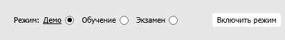
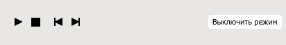
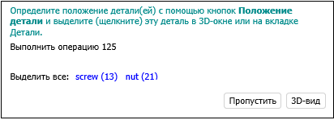
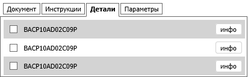
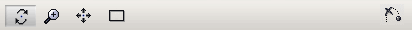

Учебно-тренировочное приложение – интерфейс пользователя
Учебно-тренировочные HTML-приложения предоставляют возможность изучения технической процедуры при использовании средств трехмерной графики. Имеется три различных режима работы приложения:
- Демо – техническая процедура выполняется от начала до конца без необходимости какого-либо участия обучаемого. Предоставляется возможность повторного проигрывания шагов технической процедуры с различными скоростями и при различных видах.
- Обучение – требует действий обучаемого согласно сценарию учебно-тренировочного процесса. Процедура выполняется по подсказкам системы.
- Экзамен – проверка полученных навыков обучаемого. Процедура выполняется самостоятельно без подсказок системы.
Элементы управления
Нижняя панель позволяет активировать режимы учебно-тренировочного приложения:

В режимах Демо и Обучение имеется возможность управлять проигрыванием процедуры, используя панель проигрывания:

- Воспроизведение – запускает (останавливает) проигрывание процедуры.
- Возврат на начало шага – возвращает процедуру к началу текущего шага.
- Предыдущий шаг – возвращает процедуру на один шаг назад.
- Следующий шаг – сдвигает выполнение процедуры на один шаг вперед.
- Выключить режим – выключает текущий режим.
- 3D-вид: Позволяет активировать вид из списка видов текущего шага процедуры.
Операционная панель предоставляет подсказки системы, а также кнопки для быстрого поиска устройств, органов управления, деталей и др. Обучаемый должен прочесть инструкцию и выполнить соответствующее действие, например, ввести значение параметра или выбрать указанный объект, щелкнув по нему в 3D-окне:

Верхняя панель предоставляет обучаемому дополнительную информацию о процедуре:

- Документ. Показывает часть документа, относящуюся к текущему шагу процедуры.
- Инструкции. Показывает инструкции, относящиеся к текущему шагу процедуры.
- Детали. Предоставляет список интерактивных объектов данного тренировочного курса. Позволяет находить объекты в 3D-окне и просматривать информацию об объектах (если имеется).
- Параметры. Показывает список параметров данного тренировочного курса. Параметры используются в условных переходах сценария тренировочного курса.
Режимы тренировочного курса
Демо
- Чтобы включить данный режим, выберите Демо, затем щелкните Включить режим.
- Чтобы начать проигрывание, щелкните Воспроизведение. Описание текущего шага будет показано на вкладке Документ. Процедура будет проигрываться циклически.
- Чтобы временно остановить проигрывание, щелкните Пауза. Щелкните Воспроизведение, чтобы продолжить проигрывание.
- Чтобы просмотреть описание процедуры целиком, щелкните Документ.
- Имеется возможность использовать команды навигации в 3D-окне (см. Навигация в 3D-окне).
- Вкладка Детали позволяет подсветить требуемые детали в 3D-окне (необходимо щелкнуть наименование детали) и показать дополнительную информацию (инфо).
- Чтобы перейти к следующему (предыдущему) шагу, щелкните Следующий шаг ( Предыдущий шаг).
- Чтобы выйти из демо-режима, щелкните Выключить режим.
Обучение
- Чтобы включить данный режим, выберите Обучение, затем щелкните Включить режим.
- Чтобы начать проигрывание, щелкните Воспроизведение. Необходимо следовать инструкциям, появляющимся в операционном окне. Существует три типа инструкций:
- Указать объекты (детали, органы управления), которые задействованы на данном шаге процедуры. Объекты можно отметить щелчком в 3D-окне или на вкладке Детали;
- Выбрать правильный ответ из предложенного списка ответов;
- Ввести требуемый параметр.
- Кнопка Пропустить позволяет перейти к следующему шагу процедуры, минуя текущий шаг.
- Индикатор ошибок качественно предоставляет информацию о сделанных на шаге ошибках (зеленый – верно, красный – ошибка). Указатель индикатора смещается вправо при каждой сделанной ошибке. Каждый новый шаг начинается с нулевого значения.
- Выполните все шаги процедуры и затем щелкните Выключить режим, чтобы завершить работу в данном режиме.
Экзамен
- Чтобы включить данный режим, выберите Экзамен, затем щелкните Включить режим.
- Все операции выполняются аналогично операциям в режиме обучения, но без каких-либо подсказок системы.
- Выполните все шаги процедуры и затем щелкните Выключить режим, чтобы завершить работу в данном режиме.
Навигация в 3D-окне
Команды навигации в трехмерном пространстве выполняются посредством навигационной панели:

Контроль увеличения:
- Используйте колесо мыши;
- Или щелкните
 «Масштабирование» на навигационной панели, затем переместите указатель в 3D-окно, нажмите левую
кнопку мыши, перемещайте мышь вперед или назад, не отпуская левую кнопку.
«Масштабирование» на навигационной панели, затем переместите указатель в 3D-окно, нажмите левую
кнопку мыши, перемещайте мышь вперед или назад, не отпуская левую кнопку.
Перемещение:
- Переместите указатель в любое место 3D-окна, затем перемещайте мышь, удерживая среднюю кнопку (или колесо мыши) в нажатом положении.
- Или щелкните
 «Перемещение» на навигационной панели, переместите указатель в 3D-окно и перемещайте мышь, удерживая левую
кнопку.
«Перемещение» на навигационной панели, переместите указатель в 3D-окно и перемещайте мышь, удерживая левую
кнопку.
Чтобы сделать всю модель видимой в трехмерном окне:
- Щелкните
 «Подогнать» на навигационной панели.
«Подогнать» на навигационной панели.
Чтобы поворачивать трехмерную модель:
- Щелкните
 «Вращение» на навигационной панели, переместите указатель в 3D-окно и перемещайте мышь, удерживая левую
кнопку.
«Вращение» на навигационной панели, переместите указатель в 3D-окно и перемещайте мышь, удерживая левую
кнопку.
Чтобы установить центр вращения в 3D-окне:
- Нажмите клавишу ALT на клавиатуре и затем щелкните требуемый трехмерный объект в 3D-окне;
- Или поместите указатель на требуемый объект в 3D-окне и затем щелкните средней (или колесом) кнопкой мыши.
Чтобы перейти к следующему подшагу процедуры (анимации):
- Щелкните
 «Пропустить текущую анимацию».
«Пропустить текущую анимацию».
Настройки
- Скорость. Предоставляет выбор скорости проигрывания. Выбирается коэффициент, на который будет умножена стандартная скорость проигрывания.
- Зафиксировать вид. Если выбрано, текущий вид не будет изменяться во время проигрывания.
- Отключить предупреждения. Если выбрано, запрещает вывод сообщений и предупреждений.
- Дополнительная подсветка деталей в режимах Демо и Обучение. Если выбрано, отмечает выделенный объект полупрозрачной мигающей сферой в 3D-окне. Используется для облегчения поиска трехмерного объекта.
- Непрерывное воспроизведение в Демо режиме. Если выбрано, процедуры учебно-тренировочного курса проигрываются до завершения без остановок. Если флажок снят, происходит останов после каждого шага процедуры.
- Подсказки в режиме обучения. Показывает или скрывает подсказки на операционной панели: наименование деталей для текущей операции и установка правильного ответа для задания «выбрать ответ из списка».
- Показывать границы поверхностей. Если выбрано, включает режим отображения границ поверхностей в 3D-окне.
- Сглаживание. Активирует механизм сглаживания наклонных линий в 3D-окне для минимизации искажений.
- Фоновое затенение. Активирует технику затенения (ambient occlusion shading) в 3D-окне для улучшения отображения затененных поверхностей.
- Отображать контур объекта при наведении. Отображается контур выделенного объекта.